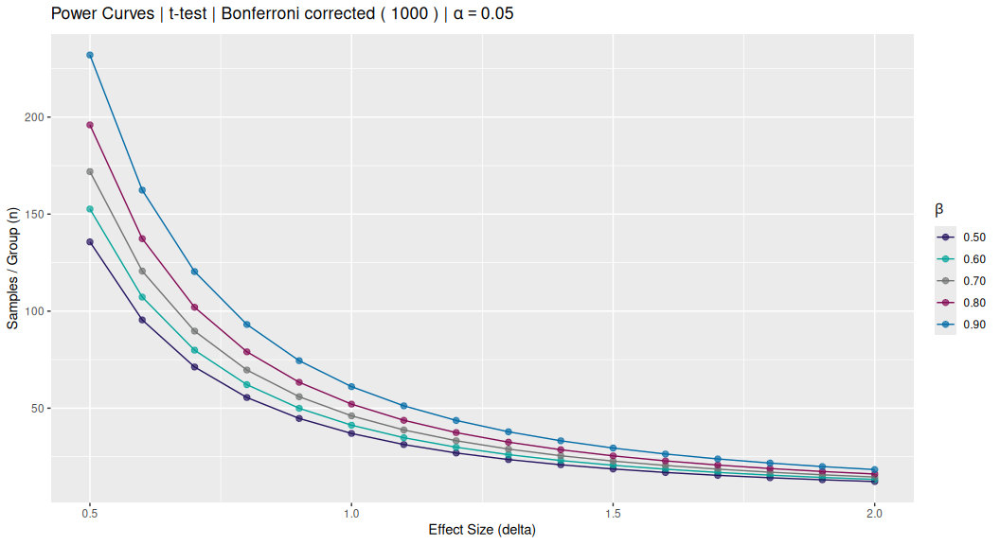
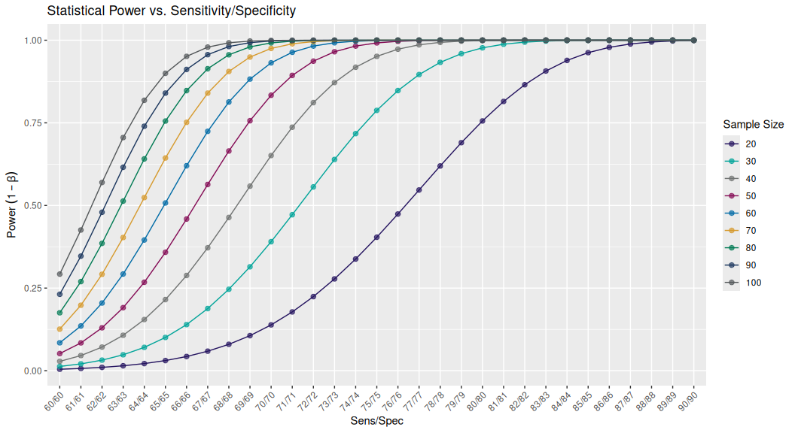
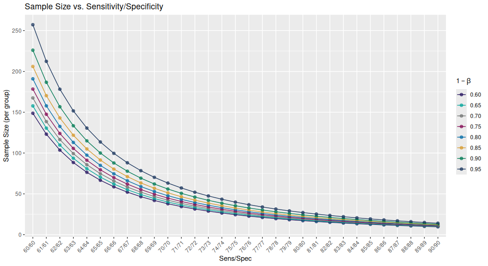
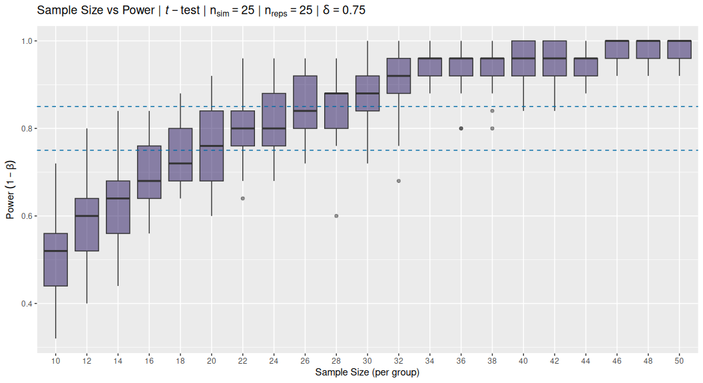
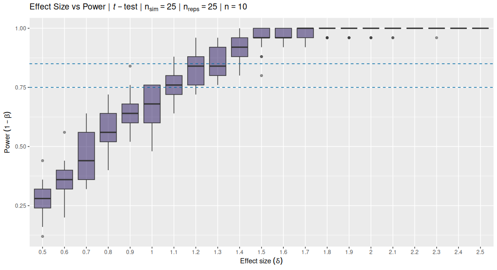
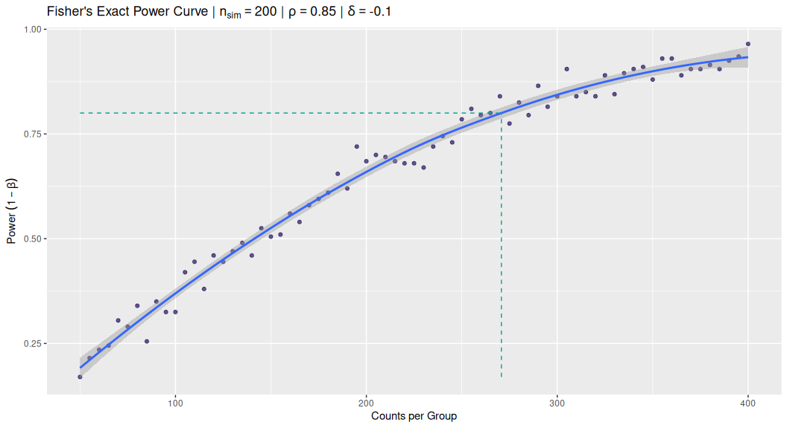

The power package contains some simple functions to empirically simulate and estimate statistical power under various statistical test conditions. In general, simulations are performed with known effect sizes or differences, and the proportion of detected significant p-values represents the empirical power, i.e. or 1 - TypeII error.
The goal is typically get an idea of the required sample size given an experimental design, statistical test, effect size, and desired power.
Installation
The power package is not currently on CRAN but you can install the latest version from github via:
# current dev version
remotes::install_github("stufield/power")
# or a specific version
remotes::install_github("stufield/power@v0.0.1")Plot power curves
The simplest way to generally plot power curves is via plot_power_curves() which uses power.t.test() under the hood:
plot_power_curves(
delta_vec = seq(0.5, 2, 0.1),
power_vec = seq(0.5, 0.9, 0.1)
)
Power curves and KS-distance
There is a loose “rule-of-thumb” relationship between Sensitivity/Specificity and KS-distance, and of course, KS is related to effect size. So we can visualize this relationship also via a standard power curve:
ks_tables <- ks_power_table()
ks_tables
#> $n
#> # A tibble: 31 × 10
#> SS KS `power=0.60` `power=0.65` `power=0.70` `power=0.75` `power=0.80` `power=0.85`
#> <chr> <dbl> <dbl> <dbl> <dbl> <dbl> <dbl> <dbl>
#> 1 60/60 0.2 39.1 43.8 49.1 55.0 62.1 70.9
#> 2 61/61 0.22 32.4 36.2 40.5 45.5 51.3 58.5
#> 3 62/62 0.24 27.2 30.5 34.1 38.2 43.0 49.1
#> 4 63/63 0.26 23.2 26.0 29.0 32.5 36.6 41.7
#> 5 64/64 0.28 20.1 22.4 25.0 28.0 31.5 35.9
#> 6 65/65 0.3 17.5 19.5 21.8 24.4 27.4 31.2
#> 7 66/66 0.32 15.4 17.2 19.1 21.4 24.1 27.4
#> 8 67/67 0.34 13.7 15.2 17.0 18.9 21.3 24.2
#> 9 68/68 0.36 12.2 13.6 15.1 16.9 19.0 21.5
#> 10 69/69 0.38 11.0 12.2 13.6 15.1 17.0 19.3
#> # ℹ 21 more rows
#> # ℹ 2 more variables: `power=0.90` <dbl>, `power=0.95` <dbl>
#>
#> $power
#> # A tibble: 31 × 11
#> SS KS `n=20` `n=30` `n=40` `n=50` `n=60` `n=70` `n=80` `n=90` `n=100`
#> <chr> <dbl> <dbl> <dbl> <dbl> <dbl> <dbl> <dbl> <dbl> <dbl> <dbl>
#> 1 60/60 0.2 0.345 0.488 0.610 0.708 0.786 0.845 0.890 0.922 0.946
#> 2 61/61 0.22 0.406 0.567 0.694 0.790 0.859 0.907 0.940 0.961 0.976
#> 3 62/62 0.24 0.469 0.643 0.770 0.857 0.913 0.948 0.970 0.983 0.990
#> 4 63/63 0.26 0.534 0.715 0.834 0.908 0.950 0.974 0.987 0.993 0.997
#> 5 64/64 0.28 0.599 0.779 0.886 0.944 0.973 0.988 0.995 0.998 0.999
#> 6 65/65 0.3 0.661 0.835 0.926 0.968 0.987 0.995 0.998 0.999 1.00
#> 7 66/66 0.32 0.720 0.881 0.954 0.983 0.994 0.998 0.999 1.00 1.00
#> 8 67/67 0.34 0.774 0.918 0.973 0.992 0.998 0.999 1.00 1.00 1.00
#> 9 68/68 0.36 0.822 0.945 0.985 0.996 0.999 1.00 1.00 1.00 1.00
#> 10 69/69 0.38 0.863 0.965 0.992 0.998 1.00 1.00 1.00 1.00 1.00
#> # ℹ 21 more rows
#>
#> attr(,"class")
#> [1] "ks_pwr_table" "list"
# `power` as y-axis
plot(ks_tables)
# `n` as y-axis
plot(ks_tables, plot_power = FALSE)
Two-Groups
Empirical Power via Simulation
A more robust (?) empirical calculation of power can be generated via simulation:
# constant effect size (delta)
size_tbl <- withr::with_seed(1,
t_power_curve(seq(10, 50, 2), delta = 0.75, nsim = 25L)
)
size_tbl
#> ── t-test Power Curve Simulation ───────────────────────────────────────────────────────────────────
#> • Sim table 25 x 21
#> • Sims per calculation 25
#> • Repeats per sim (per box) 25
#> • Constant delta = 0.75
#> • Varying n
#> • Sequence 10, 12, 14, 16, 18, 20, 22, 24, 26, 28, 30, 32, 34, 36, 38, 40, 42, 44, 46, 48, 50
#> ════════════════════════════════════════════════════════════════════════════════════════════════════
plot(size_tbl)
# constant sample size (n)
delta_tbl <- withr::with_seed(2,
t_power_curve(seq(0.5, 2.5, 0.1), n = 10, nsim = 25L)
)
delta_tbl
#> ── t-test Power Curve Simulation ───────────────────────────────────────────────────────────────────
#> • Sim table 25 x 21
#> • Sims per calculation 25
#> • Repeats per sim (per box) 25
#> • Constant n = 10
#> • Varying delta
#> • Sequence 0.5, 0.6, 0.7, 0.8, 0.9, 1, 1.1, 1.2, 1.3, 1.4, 1.5, 1.6, 1.7, 1.8, 1.9, 2, 2.1, 2.2, 2.3, 2.4, 2.5
#> ════════════════════════════════════════════════════════════════════════════════════════════════════
plot(delta_tbl)
Solve for Sample Size
To solve for the sample size given a corresponding power value you must have simulate power keeping “delta” (effect size) constant and varying n. For example, the size_tbl object created above:
solve_n(size_tbl, 0.8)
#> power n
#> 0.800 22.878Fisher’s Exact for Count Data
For count data, Fisher’s Exact tests assume a 2x2 contingency matrix and equal proportions across the margins (rows x cols):
fisher_power(0.85, 0.75, 200, 200, nsim = 200L)
#> [1] 0.665Fisher’s Power Curve
f_tbl <- fisher_power_curve(seq(50, 400, 5), p = 0.85, p_diff = -0.1,
nsim = 200L)
f_tbl
#> ── Fisher's Exact Power Curve Simulation ───────────────────────────────────────────────────────────
#> • Sim table 71 x 2
#> • Sims per calculation 200
#> • p 0.85
#> • delta -0.1
#> • Varying n
#> • Sequence `n` 50, 55, 60, 65, 70, 75, 80, 85, 90, 95, 100, 105, 110, 115, 120, 125, 130, 135, 140, 145, 150, 155, 160, 165, 170, 175, 180, 185, 190, 195, 200, 205, 210, 215, 220, 225, 230, 235, 240, 245, 250, 255, 260, 265, 270, 275, 280, 285, 290, 295, 300, 305, 310, 315, 320, 325, 330, 335, 340, 345, 350, 355, 360, 365, 370, 375, 380, 385, 390, 395, 400
#> ════════════════════════════════════════════════════════════════════════════════════════════════════Solve for n
pwr_n <- solve_n(f_tbl, 0.8)
pwr_n
#> power n
#> 0.800 264.533Visually check the curve and add the solution to the ggplot.
gg_pwr +
ggplot2::annotate("segment",
x = c(pwr_n[["n"]], min(f_tbl$n)),
xend = c(pwr_n[["n"]],pwr_n[["n"]]),
y = c(min(f_tbl$power), pwr_n[["power"]]),
yend = c(pwr_n[["power"]], pwr_n[["power"]]),
linetype = "dashed", colour = "#00A499")